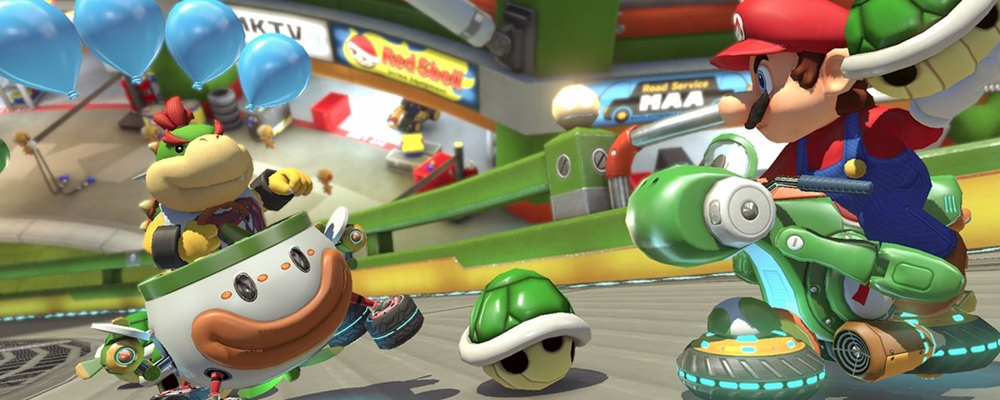
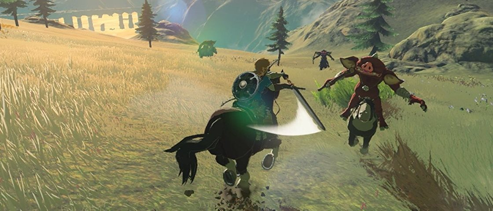

Turbinado! Mario Kart 8 Deluxe rodará em 1080p e 60 fps no Switch em dock
Postado em 02 de Abril 2016
Sabemos que o primor técnico não é necessariamente o foco do Switch, mas é sempre bom ler notícias que tragam esse tempero ao console. Ainda mais quando falamos de Mario Kart 8 Deluxe, versão de um game que já rodava lindamente no Wii U. Pois bem: no Switch, ele vai funcionar em 1080p e 60 quadros por segundo quando o aparelho estiver repousado no dock e conectado à TV. A informação vem do Technobuffalo. O jogo de corrida terá esse desempenho na modalidade solo ou em dois jogadores. A confirmação teria vindo de um representante da Nintendo durante a PAX East. Quando três ou quatro jogadores estão presentes na jogatina, a performance cai para o padrão de 30 fps.
Postado por Thais GrazieleResident Evil Revelations será lançado para PS4 e X1 até o final de 2017
Postado em 12 de Dezembro 2016Diretamente do 3DS para o seu PS4 e Xbox One: sim, Resident Evil Revelations será lançado para as plataformas. Na verdade, o game já ganhou uma remasterização do portátil, e a nova edição seria apenas uma roupagem para os consoles atuais. A Capcom anunciou que o jogo será lançado “fisicamente e digitalmente na América do Norte e na Europa em 2017”. Ainda não há data precisa ou valor, mas a previsão é que o título seja lançado até o final deste ano.
Postado por Thais GrazieleFechar Breath of the Wild em menos de uma hora? Já estão fazendo isso
Postado em 12 de Dezembro 2016
Se você é como este humilde redator que vos escreve, provavelmente deve ter ficado bastante curioso para ver o quão rápido os speedrunners conseguiriam derrotar Calamity Ganon em The Legend of Zelda: Breath of the Wild. Pois bem, o game chegou e já estamos vendo o público alcançar recordes absurdos, com algumas pessoas alcançando marcas de menos de uma hora para fechar a aventura. O recorde oficial da jogatina, por sua vez, pertence atualmente ao gamer Venick409, com a marca de 54:05, cuja run pode ser conferida abaixo. Seguido dele, temos os jogadores Gymnast86, com 58:01 e Orcastraw, com 58:06. O problema é que os meios usados por eles e muitos outros speedrunners para alcançar isso não estão agradando muita gente.
Postado por Thais Graziele